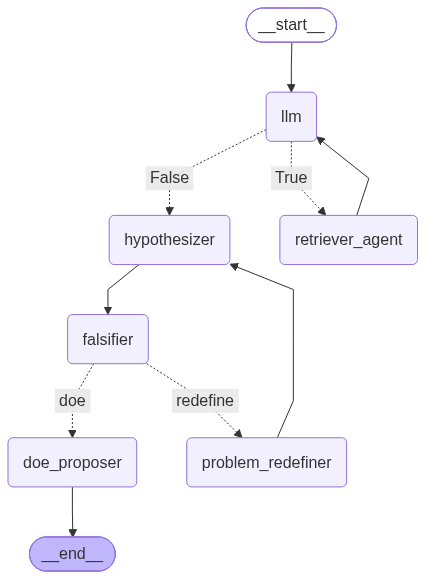

HypoGen | Multi-Agent Framework for Automated Hypothesis Generation
HypoGen is an advanced agentic workflow designed to automate the transition from unstructured scientific literature to testable experimental designs. The system implements a sophisticate Retrieval-Augmented Generation (RAG) architecture to ensure that all generated insights are grounded in empirical evidence, eliminating the hallucination risks typical of standalone LLMs.
System Architecture & Orchestration:
The framework is built using LangGraph, employing a state-graph structure to manage complex transitions between specialized agents. This ensures a deterministic and reproducible reasoning process. The workflow is orchestrated as follows:
Semantic Retrieval:A local vector database acts as the primary knowledge source, indexing technical PDFs and documents to provide context-aware grounding for every claim.
Iterative Hypothesis Loop: The system utilizes a multi-agent adversarial setup. A Hypothesizer agent proposes a scientific lead, which is then passed to a Falsifier agent.
Automated Auditing & Pivoting: The Falsifier agent audits the hypothesis against the retrieved evidence. Upon detecting logical contradictions, the system triggers a state transition back to the problem redefinition phase, iteratively refining the scope until a contradiction-free hypothesis is reached.
From Theory to Execution (DoE): Once the hypothesis is validated, HypoGen translates the theoretical output into a structured Design of Experiments (DoE). The system automatically determines the optimal experimental framework (e.g., full factorial designs), defining variable levels and a priori validation criteria for physical implementation.

Tech Stack & Privacy:
To ensure data privacy and deterministic output, HypoGen is integrated with local LLMs, removing dependency on external APIs and ensuring that sensitive research data remains within a secure environment.
GitHub: github.com/markus-schindler/HypoGen